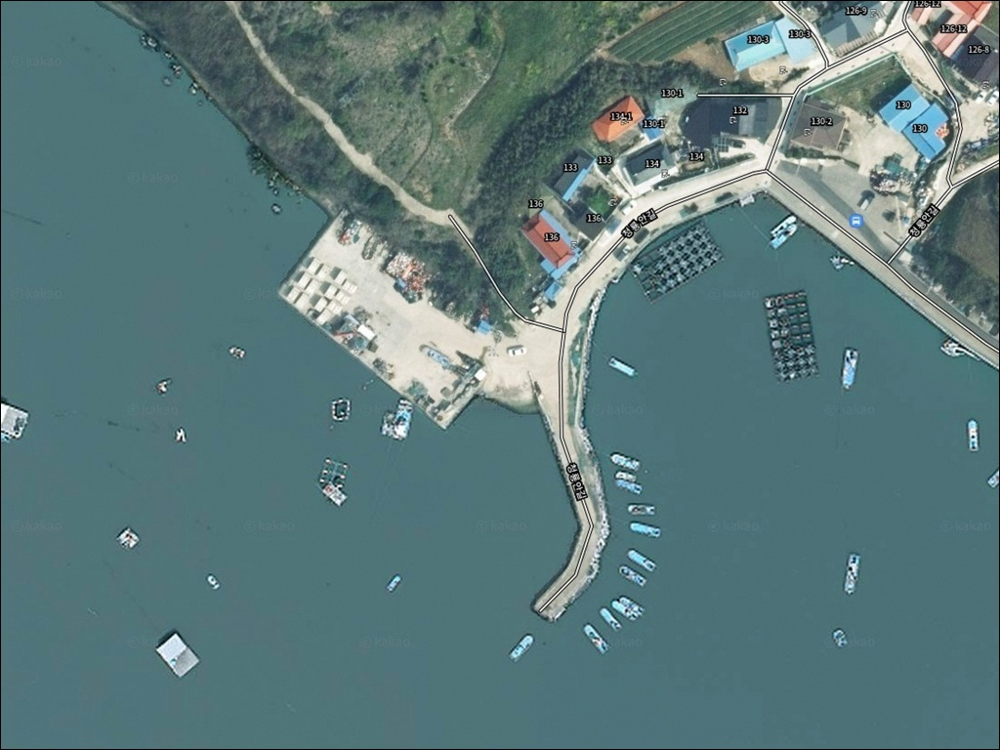
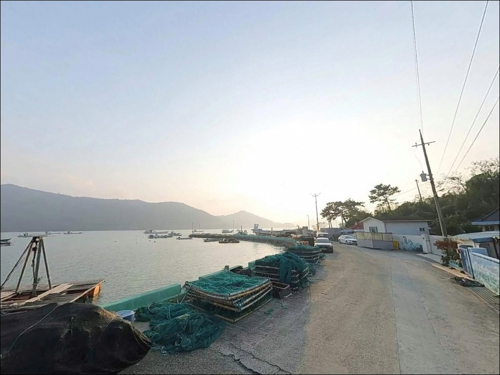
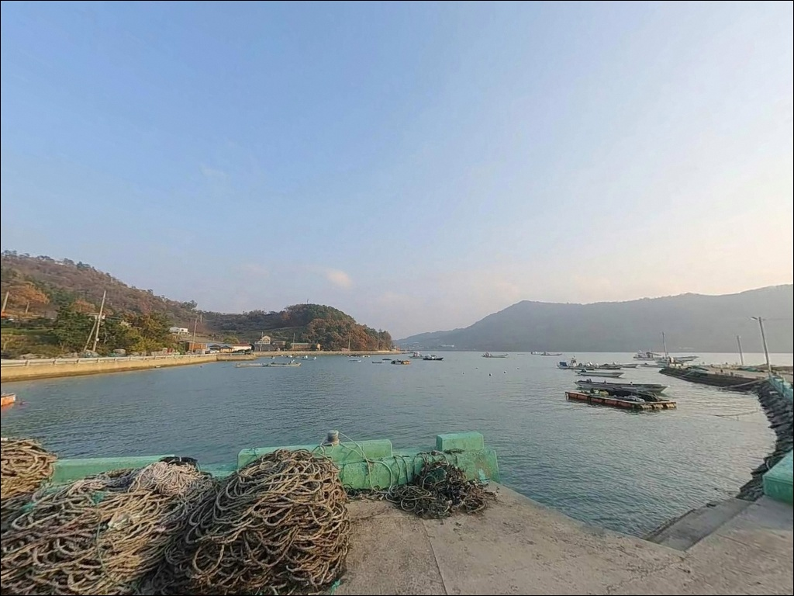
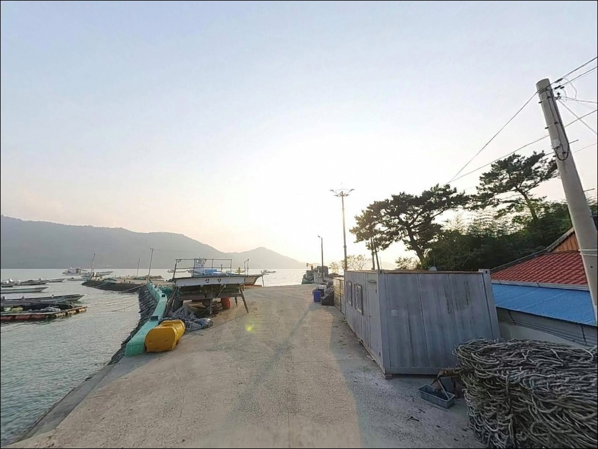
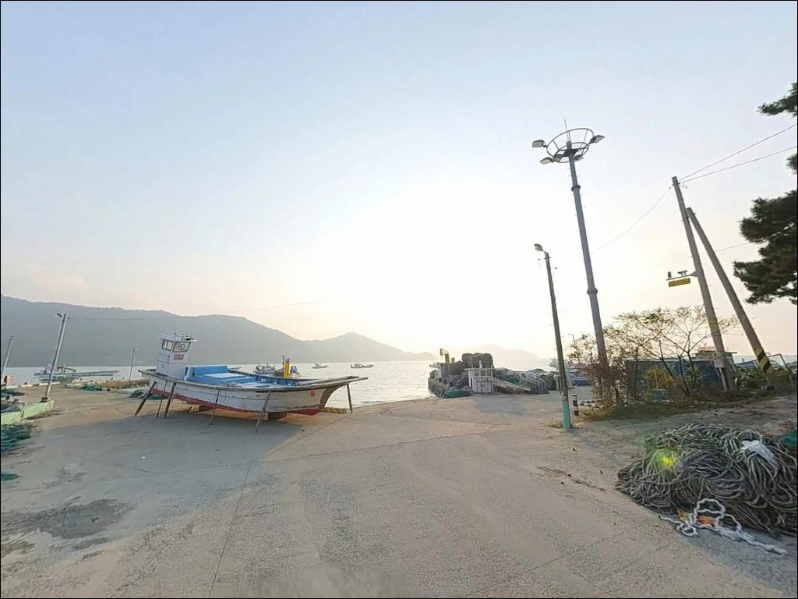
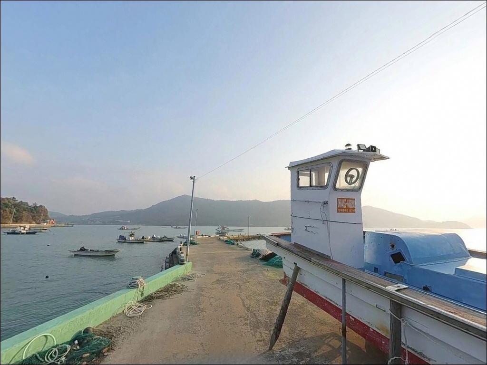
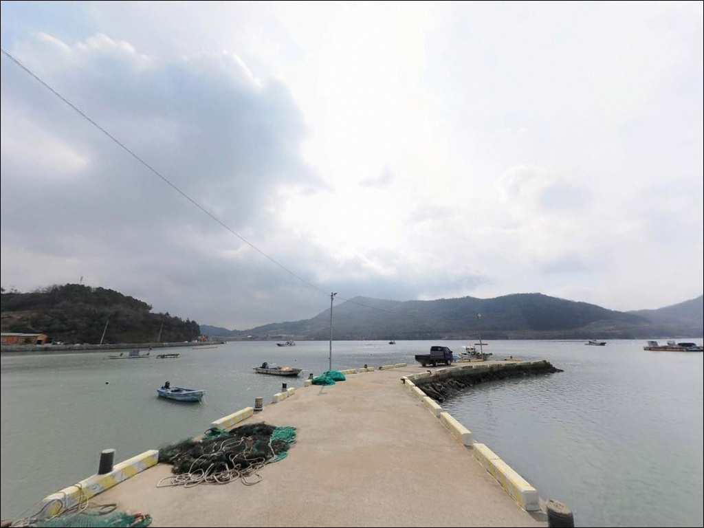
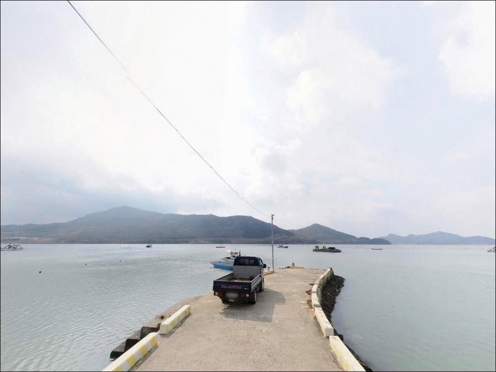
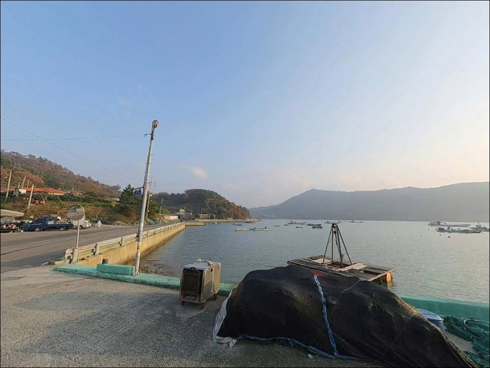

안방파제, 진도 전남 진도군 노을빛이 스며드는 차박, 낚시 겸용 감성 장소
이 페이지에는 광고(제휴 링크 포함)가 있으며, 광고 링크를 통해 구매하면 운영자가 판매 수익 또는 수수료를 받을 수 있습니다. 포인트 사진: 카카오맵 스카이뷰·로드뷰. 이 페이지의 지도·사진 이미지는 카카오맵의 실제 서비스 이미지와 다를 수 있습니다.


포인트 안내
안방파제
전남 진도군 진도읍 수유리 1072-10
진도 안방파제 방문 전 가장 많이 놓치는 판단은
조류 타이밍입니다.
진도 서안은 조류가 강한 해역에 속해,
사리 전후 조류가 세지는 타이밍에 진입하면
어떤 채비를 써도 바닥을 제대로 공략하기 어려워집니다.
이 글은 안방파제의 지형 조건, 진입 여건,
낚시 방식 적합성, 차박 체류 환경에 집중하며,
조황 단정과 시설 확정 정보는
이 글의 범위에 포함되지 않습니다.
진도읍 수유리는 진도읍 서쪽 해안에 자리한
소규모 어촌 마을입니다.
안방파제는 낚시 커뮤니티에 자주 오르내리는 포인트는 아니며,
공식 어항 DB에도 등록이 확인되지 않는
마을 단위의 작은 방파제입니다.
아직 많이 알려지지 않은 만큼
사전 답사가 방문 성패를 가르는 포인트이기도 합니다.

1. 진입 동선과 포인트 접근 환경
수유리는 진도읍 시내에서 서쪽 해안도로를 따라
2~3km 내외 거리에 자리하고 있습니다.
읍내에서 해안 방향 소로로 빠지는 진입 구조로,
마을 안쪽까지 이어지는 도로는
농어촌 소로 수준의 폭이 좁은 구간을 포함합니다.
대형 SUV나 캠핑 장비를 실은 차량이라면
출발 전 위성지도로 진입로를 먼저 살피는 편이 좋습니다.
소규모 마을 방파제 특성상
방파제 끝까지 차량이 진입하는 구조는 아닙니다.
방파제 초입 공터나 선착장 앞 여유 공간이
주차 후보가 되는 편이며,
회차 공간도 넉넉하지 않으므로
후진 진출이 어려운 대형 차량은 갓길 여건까지 함께 확인하고
진입하는 것이 기본입니다.
어선이 출입하는 마을 선착장 구조이므로
어선 이동 동선과 어구를 막지 않는 자리를 먼저 확인해야 합니다.
주차 위치 하나만으로도 현지 어민과의 마찰 여부가 달라집니다.

2. 차박 환경과 야간 체류 여건
수유리는 진도읍 외곽의 소규모 어촌 마을로,
야간에 차량 통행이 거의 없는 편입니다.
민가와 인접한 구조여서
완전한 고립감은 아니지만,
마을 특성상 소음에 민감한 주거 환경임을 고려해야 합니다.
발전기 사용이나 큰 소리는 자제하는 것이 기본 매너입니다.
내항형 방파제 구조여서 파도 직격보다는
잔잔한 수면 환경에 가까운 편입니다.
바람 영향은 서향 방향이 열려 있는 구조상
남서풍이 강한 날은 체감이 있을 수 있습니다.
가로등이 많지 않은 마을 외곽 포인트이므로
개인 조명 장비는 필수입니다.
주차 공간이 제한적인 소형 방파제 구조상
차박을 메인 목적으로 삼기보다는
낚시 출조 후 대기형 체류로 접근하는 것이 현실적입니다.
장기 체류보다는 하룻밤 조용히 머무는 방식이 맞는 포인트입니다.


3. 주변 편의시설 및 인프라 현황
안방파제 현장 직접 편의시설은
공식 확인된 정보가 없습니다.
수유리 방파제 자체 화장실 여부는 현장에서 직접 확인해야 합니다.
출발 전 완전 자급 체제로 준비하는 것이
현실적인 접근입니다.
식수, 얼음, 여분 채비, 비상약품은
반드시 출발 전에 챙겨야 합니다.
진도읍 방향으로 2~3km 이동하면
진도읍 시내권에 닿을 수 있습니다.
편의점, 주유소, 식당이 읍내에 집중되어 있으며,
진도 농협 하나로마트에서
식재료, 낚시용 얼음, 음료 등을 구입할 수 있습니다.
부족한 소품은 출발 전 읍내에서 챙기는 동선이 효율적입니다.
응급 상황이 발생할 경우
진도한국병원(응급실 운영)이 약 7km 거리에 위치합니다.
섬 특성상 야간 의료 접근성이 낮으므로
출발 전 비상약품과 응급 연락처를 준비해 두는 것이 기본입니다.

4. 방문 전 반드시 확인할 준비사항
안방파제 방문 전 가장 먼저 할 일은
물때 확인입니다.
진도 서안은 사리 전후 조류가 특히 강해지는 해역으로,
조금 전후 또는 만조·간조 전후 타이밍을
바다타임에서 확인하고 출발 시각을 맞추는 것이 기본입니다.
기상 변화도 사전 확인 대상입니다.
진도 서안은 남서풍에 노출되는 구조의 방파제가 많고
바람 변화가 빠른 편입니다.
기상청 예보는 당일 아침 다시 한번 확인하는 것이 좋습니다.
소형 방파제 구조상 파도가 월파될 경우
즉시 철수가 원칙입니다.
소규모 마을 방파제 특성상 채비 손실에 대비해
여분 채비를 넉넉히 준비하는 것이 좋습니다.
구명조끼와 야간 낚시 시 헤드랜턴은
기본 안전 장비입니다.
출조 전 안방파제 일대 최신 조황은
반드시 검색해 보시기 바랍니다.

5. 수유리 서안 지형이 만드는 낚시 여건
안방파제는 진도읍 서쪽 해안에서
서향 해면을 향해 뻗은 구조의 소형 방파제입니다.
진도 서안 특유의 강한 조류 해역에 속해 있어,
사리 전후 채비 컨트롤이 어려워지는 구조입니다.
방파제 내항 쪽은 비교적 잔잔한 수면을 유지하고,
외항 방향은 조류 흐름을 직접 받는 구조입니다.
수심은 방파제 끝단을 기준으로
5~6m 안팎으로 깊어지는 편이며,
내항 연안부는 2~4m 수준의 얕은 수심대입니다.
바닥은 진도 서남해 특성상
뻘과 암초가 혼재하는 구조로 보이며,
밑걸림을 고려한 채비 운용이 기본입니다.
방파제 끝단은 내항보다 수심이 깊고
조류 흐름을 직접 받아 원투낚시 자리로 유효한 편입니다.
선착장 주변 수로 구간도 조류 흐름이 통하는 구간으로,
조류를 타는 찌낚시 운용이 맞는 자리입니다.
출조 전 수유리 일대 최신 조황을
꼭 검색해 보시기 바랍니다.


6. 이 지형에서 어울리는 낚시 스타일
원투낚시가 이 포인트 구조에 가장 잘 맞는 방식입니다.
진도 서안 방파제 전반에서
바닥 채비에 조류 흘림을 더하는 원투 스타일이
기본적으로 잘 맞는 지형입니다.
발밑 가까운 곳부터 방파제 끝단 방향으로
거리를 바꿔 가며 탐색하는 방식이 유효합니다.
이 해역에서 기대해 볼 수 있는 어종으로는
붕장어, 노래미, 도다리가 있으며
계절에 따라 감성돔과 숭어가 유입됩니다.
찌낚시도 수로와 방파제 끝단 구간에서
운용해볼 만한 방식입니다.
조류가 흐를 때 조류를 타는 흘림 채비가
이 해역 특성에 잘 맞으며,
조류가 너무 강한 시간대에는
채비 무게를 키우거나 정조 타이밍을 기다리는 것이
기본 대응입니다.
야간에는 소형 루어 방식도 노려볼 수 있습니다.
볼락을 대상으로 한 소형 지그헤드 리그나
농어를 노린 미노우 루어가 방파제 주변 구간에서
적합한 방식입니다.
가로등 주변이나 명암 경계선을 우선 탐색하는 것이
야간 루어의 기본 자리 선정법입니다.

7. 안방파제가 여의치 않을 때 대안 포인트
안방파제의 주차 여건이 맞지 않거나
조류 조건이 좋지 않다면
쉬미항이 가장 가까운 대안입니다.
진도읍 서부 해안도로 방향에 위치한 쉬미항은
발판이 안정적이고 접근성이 좋아
방파제 낚시 입문으로도 무난한 포인트입니다.
좀 더 확실한 낚시 여건을 원한다면
진도 금갑방파제나 수품항 방파제를
대안으로 삼을 수 있습니다.
금갑방파제는 인공어초가 있어 어자원이 풍부하고,
수품항 방파제는 수심 6~10m의
사계절 낚시가 가능한 대형 방파제입니다.
진도 서남쪽 방향으로 이동이 필요하지만
본격적인 낚시를 원한다면 이쪽이 더 확실한 선택입니다.
차박 여건을 함께 고려한다면
진도 고군면 가계해변 인근 주차장이
넓은 공간을 확보할 수 있는 대안입니다.
주변 방파제와 조합해 낚시와 차박을
동시에 계획하기 좋은 동선입니다.

조류 타이밍을 알면
안방파제가 달라 보입니다
원투낚시나 찌낚시를 즐기는 낚시인이라면
안방파제의 지형 구조는 나쁘지 않습니다.
진도 서안 특유의 조류가 방파제 끝단을 흐르고
감성돔과 붕장어를 비롯한 다양한 어종을
기대해볼 수 있는 조건을 갖추고 있습니다.
낚시 커뮤니티에 자료가 거의 없는 만큼
직접 답사해 두면 조용한 단골 포인트가 될 수 있습니다.
반면 물때 계산 없이 사리 전후에 진입하거나,
편의시설을 기대하고 방문하면
허탕을 치기 쉬운 포인트입니다.
물때 확인, 완전 자급 준비, 진입로 사전 파악—
이 세 가지를 갖추고 간다면
기억에 남는 조용한 출조가 될 수 있는 곳입니다.
낚시를 마치고 진도읍 방향으로 10분도 걸리지 않는 거리이니
물때가 맞는 날 하룻밤 차박과 함께
조용히 즐기기 좋은 선택지입니다.